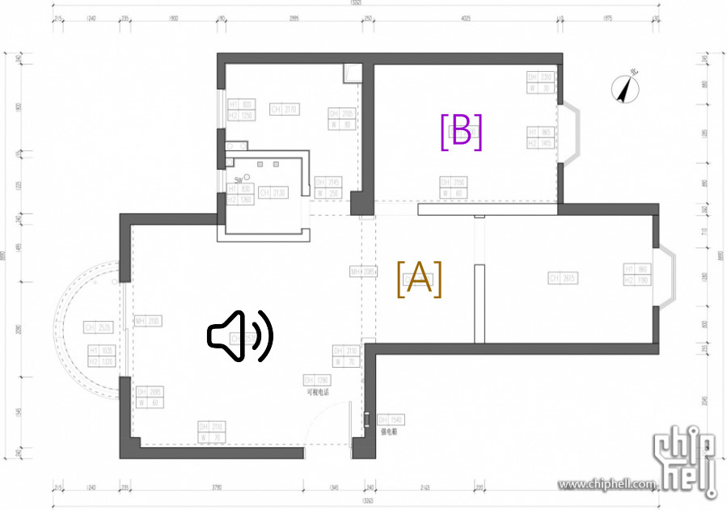
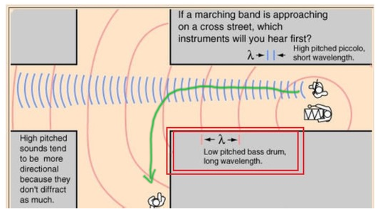
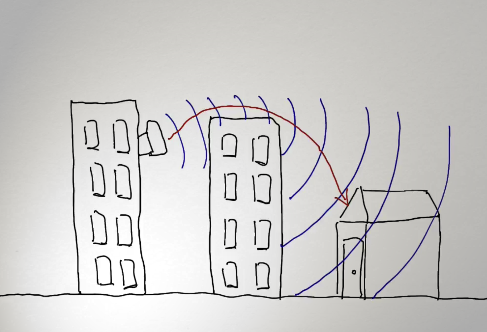

繞射請確保你以閲讀繞射的教學 |
引入 |
根據以下圖片，猜猜在不同地方聼到的音量，并點擊錄音聆聽答案。  |
| 你知不知道到底爲什麽在房間也能聽到在客廳發出的聲音嗎？ |
繞射的現象 |
| 原來，在房間聽到聲音與繞射息息相關。 |
 在繞射作用下，聲音如通過狹縫一樣向墻壁兩側傳播，所以在家裏任何一個角落都能聽到聲音。 |
繞射的應用 |
| 樓高比較低的大廈爲什麽在四面高樓的情況下仍然能接收到信號呢？ |
|  |
| 從圖片可見，信號從高樓上直接繞射到較矮的房子上上，令信號得以順利傳輸。 |
| 試試利用你家的平面圖，繪畫出路由器的繞射波吧。 |